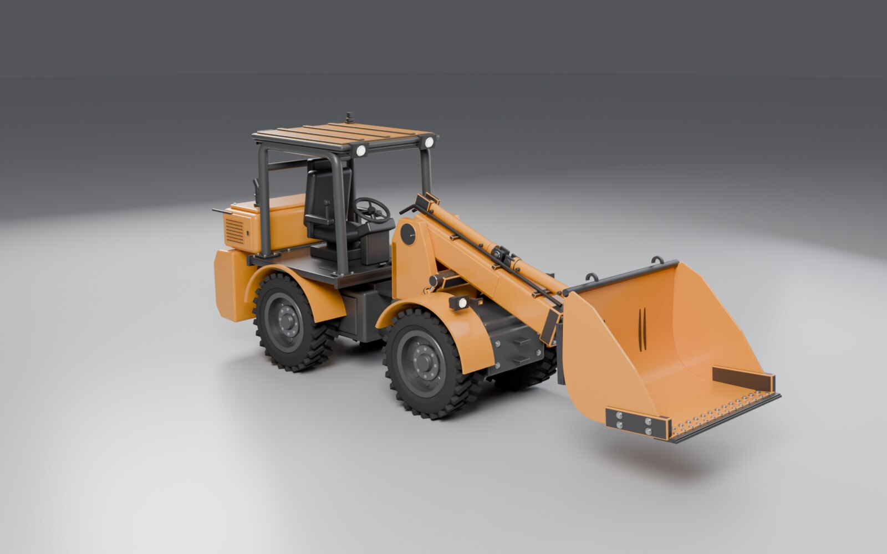
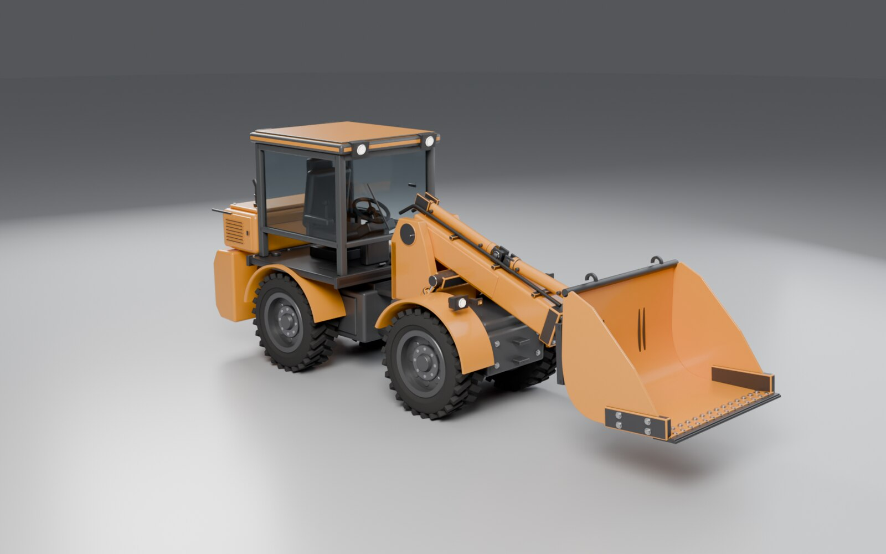
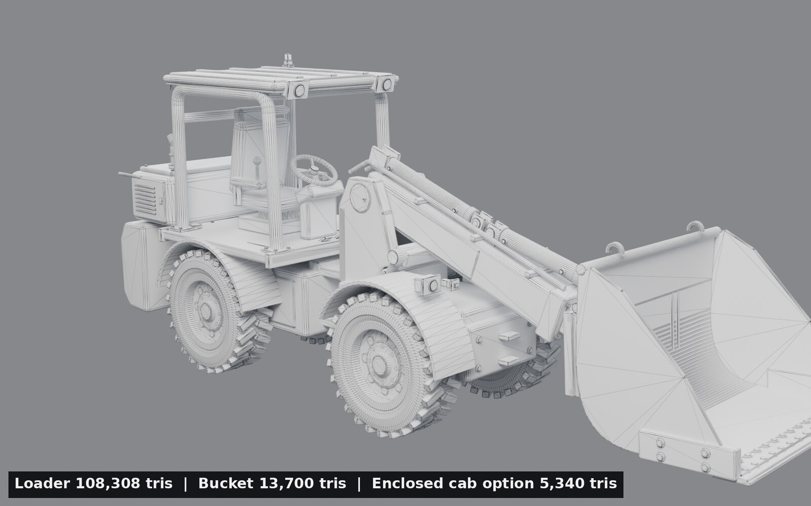
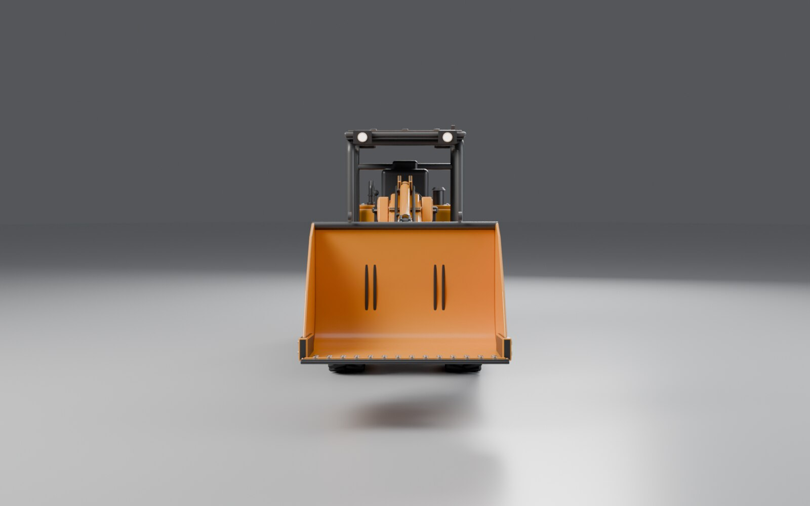
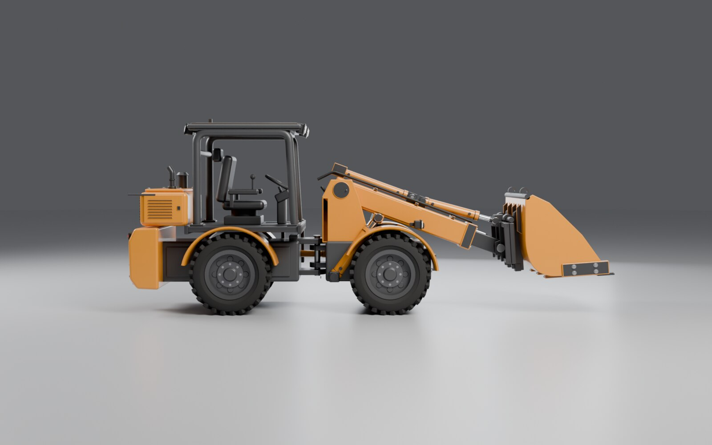
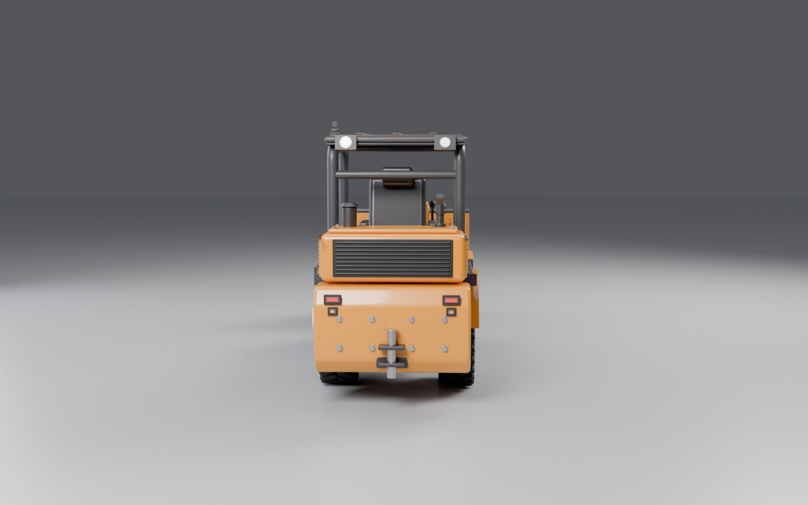
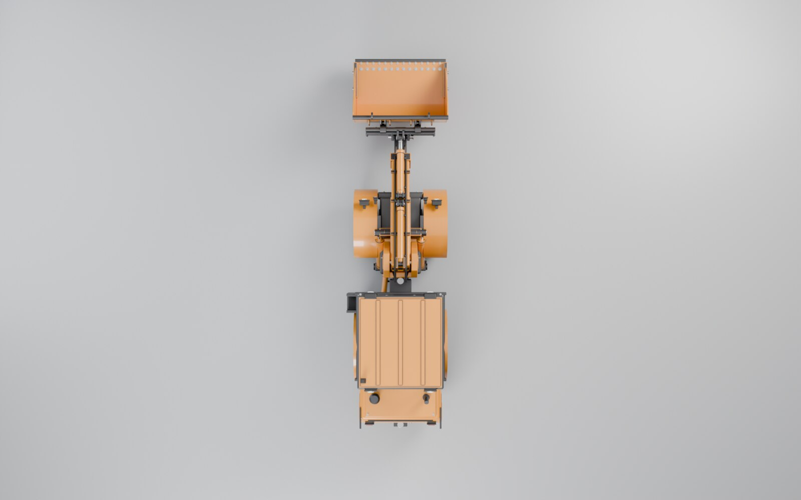

| Loader | 108,308 tris (with ROPS) · 5 baked clips · 5 hydraulic rams (lift L/R, telescope, tilt, steering) on anchor Empties |
| Bucket | 13,700 tris · separate asset, hooks on the rear face over the quick-attach top bar |
| Cab option | cab_enclosed 5,340 tris · swaps the ROPS canopy (mount_cab) |
| Materials | PBR metal/roughness, one shared paint material, 2048² baked AO atlas (JPEG in glTF) |
| Rig | Articulation ±43°, boom lift 0–65°, telescope 0–0.70 m, self-levelling quick-attach plate, tilt −45° / +40° relative to ground |






